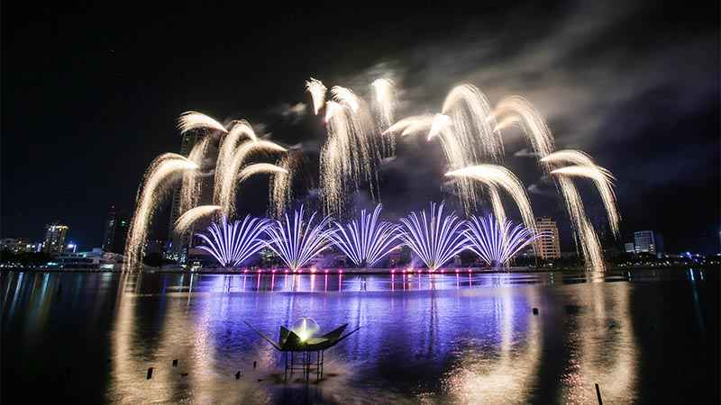

Thành phố Đà Nẵng nằm ở vùng Trung du của Việt Nam, gần như cách đều thủ đô Hà Nội ở phía bắc và thành phố Hồ Chí Minh ở phía nam. Đà Nẵng cũng là điểm trung tâm kết nối ba Di sản Thế giới đã được UNESCO công nhận: Cố đô Huế, phố cổ Hội An và thánh địa Mỹ Sơn.
Đà Nẵng phía Bắc giáp tỉnh Thừa Thiên Huế, phía Tây và Nam giáp tỉnh Quảng Nam, phía Đông giáp Biển Đông. Thành phố nằm ở giữa đất nước, trên trục giao thông Bắc - Nam về đường bộ, đường sắt, đường biển, đường hàng không và nằm ở một đầu của Hành lang kinh tế Đông Tây, một hành lang kinh tế nối Việt Nam với Lào, Thái Lan và Miến Điện (Myanma).
Thành phố có diện tích 1156,53 km² gồm 06 quận nội thành (Hải Châu, Thanh Khê, Liên Chiểu, Ngũ Hành Sơn, Sơn Trà, Cẩm Lệ) và huyện Hòa Vang, huyện đảo Hoàng Sa, với một dân số 942 132 nhân khẩu (tính đến ngày 31/11/2010).
Giờ địa phương UTC + 07:00
Cảnh quan thiên nhiên đa dạng
Đà Nẵng là thành phố biển với đường bờ biển dài 60 km. Với những bãi cát mịn và dài chạy dọc bờ biển, biển Đà Nẵng được tạp chí Forbes (Mỹ) bình chọn là 1 trong 6 bãi biển đẹp nhất thế giới. Đắm mình trong làn nước sapphire, đùa giỡn với những con sóng hay chỉ nằm tắm nắng trên bãi biển tuyệt đẹp và bạn sẽ được thư giãn, đổi gió sau một ngày làm việc mệt mỏi. Hơn nữa, một loạt các trò chơi bãi biển được cung cấp theo yêu cầu của bạn: chèo xuồng, dù lượn, mô tô nước, thuyền chuối, lặn biển,…
Không chỉ là thành phố nổi tiếng với những bãi biển, nét quyến rũ của Đà Nẵng còn nằm ở vị trí địa lý: tựa lưng vào dãy Trường Sơn hùng vĩ, có bán đảo Sơn Trà ôm lấy biển. Đèo Hải Vân, được định hình bởi đặc điểm địa lý lý tưởng này được ca tụng là 'Thiên hạ đệ nhất hùng quan' vì có tầm nhìn tuyệt đẹp hướng ra biển, bên cạnh những khúc cua hiểm trở khét tiếng. Từ khi hầm Hải Vân (hầm đường bộ dài nhất Việt Nam) thông xe, lưu lượng và an toàn giao thông đã được cải thiện. Kể từ đó, đèo Hải Vân đã trở thành điểm đến của những nhà thám hiểm và những người yêu thích thiên nhiên, những người dám thử thách bản thân trên những cung đường khét tiếng này.
Thành phố Đà Nẵng cũng là nơi tọa lạc của Bà Nà Hills - một thương hiệu được tiếp thị tốt của du lịch Đà Nẵng. Được khai phá và xây dựng từ thời Pháp thuộc, Bà Nà Hills ngày càng trở thành địa điểm thu hút đông đảo du khách với 2 cáp treo đạt kỷ lục Guiness thế giới và tổ hợp vui chơi trong nhà lớn nhất Đông Nam Á - Công viên Fantasy (Sun World Danang Wonders).

Từ Bà Nà Hills - phía Tây thành phố, du khách có thể rẽ sang hướng Đông Bắc khám phá Bán đảo Sơn Trà - khu rừng rậm giữa lòng thành phố với thảm thực vật, động, thực vật phong phú; dọc theo bờ biển gồ ghề và đá hoang sơ. Đi về hướng Đông Nam, bạn sẽ bắt gặp Ngũ Hành Sơn nổi tiếng , nơi lưu giữ những danh lam thắng cảnh, văn hóa và tôn giáo.
Thành phố của sự vui vẻ và thân thiện
Không chỉ được thiên nhiên ưu đãi bởi vô số cảnh đẹp, Đà Nẵng còn được cho là 'đáng sống' bởi môi trường trong lành và yên bình. Từng dẫn đầu cả nước về phát triển kinh tế, Đà Nẵng đồng thời giữ mức độ an toàn và an ninh trong tầm kiểm soát, giải quyết tình trạng vô gia cư và lang thang, tránh xa ma túy và giảm thiểu ùn tắc giao thông.
Vì vậy, du khách có thể yên tâm tham quan thành phố trong tư thế thoải mái và thư thái nhất. Đến với Đà Nẵng, du khách sẽ được thỏa mãn cơn thèm ăn với vô số đặc sản địa phương như mì Quảng, bánh tráng cuốn thịt heo luộc thái mỏng, hải sản tươi sống,… tại hơn 150 nhà hàng tiêu chuẩn, chất lượng cao.
Hiện tại, một loạt các hoạt động vui chơi giải trí đang diễn ra trên khắp thành phố, chủ yếu là tại đường Bạch Đằng . Hãy đi bộ dọc theo con phố để cảm nhận Đà Nẵng về đêm, xem các buổi biểu diễn nghệ thuật truyền thống hoặc hòa mình vào các cửa hàng giải trí về đêm.
Những người yêu thích chơi golf chắc chắn sẽ rất thích thú với sân golf 18 lỗ từng đoạt giải thưởng của Đà Nẵng.
Để trở thành một điểm đến du lịch sự kiện, Đà Nẵng đang tổ chức rất nhiều sự kiện du lịch quy mô lớn, một trong số đó là Lễ hội pháo hoa quốc tế Đà Nẵng hay DIFF - màn trình diễn pháo hoa tuyệt vời của nhiều quốc gia khác nhau. DIFF được cho là sản phẩm du lịch “chính gốc” của Đà Nẵng. Vào tháng 5 năm 2011, thành phố đã tổ chức ' Cuộc thi Nhảy dù Quốc tế' . Ngay sau đó vào tháng 6 là sự kiện khai mạc mùa hè 'Điểm đến mùa hè Đà Nẵng 2017' - tuyển chọn các hoạt động vui chơi giải trí trên bãi biển dành cho những du khách thích nghỉ dưỡng.
Di chuyển đến Đà Nẵng
Du khách sẽ không gặp khó khăn gì khi đến Đà Nẵng. Cảng hàng không quốc tế của thành phố hoạt động với công suất lớn (đón khoảng 6 triệu lượt khách/năm) và đã mở nhiều đường bay thẳng. Cảng biển Tiên Sa là một đầu mối du lịch khác của thành phố, đón các tàu du lịch sang trọng. Nếu bạn đến bằng đường bộ hoặc tàu hỏa, thì Đà Nẵng là một trong những điểm dừng chính.

Tiềm năng phát triển
Trong 6 tháng đầu năm 2017, tổng lượng khách đến Đà Nẵng đạt 3.229.476 lượt người, tăng 33,2% so với cùng kỳ năm 2016. Trong tổng số khách quốc tế, có 1.222.398 lượt, tăng 72% so với năm ngoái. ; 2.007.079 lượt khách nội địa - tăng 17,1% so với năm 2016. Tổng lượng khách du lịch (lưu trú qua đêm) tăng lên 2.007.079 lượt - chiếm 51,3% dự báo năm 2017.
Trong nửa đầu năm 2017, lượng khách từ Thái Lan và Lào đến Đà Nẵng tăng lên 4.470 lượt khách; lượt khách đến bằng đường hàng không tăng 2,2 lần (726.360 lượt) so với năm 2016; lượng khách đến bằng đường biển tăng 24% (52,203) với 44 tàu du lịch cập cảng nước sâu Tiên Sa.

Quy hoạch phát triển của thành phố đến năm 2015 ưu tiên các ngành thương mại, dịch vụ và du lịch; với việc sau này được đầu tư mạnh mẽ để trở thành nền kinh tế hàng đầu. Du lịch Đà Nẵng được hình dung và phát triển theo ba hướng tiếp cận:
- Du lịch ven biển (giải trí, an sinh & spa) và du lịch sinh thái
- Du lịch trải nghiệm và giáo dục (văn hóa, lịch sử, di sản, cuộc sống đồng quê, làng nghề thủ công…)
- Du lịch ICE (hội họp, khuyến khích, hội nghị, sự kiện) và mua sắm
Đà Nẵng đặt mục tiêu đón 4 triệu lượt khách vào năm 2015, trong đó khách quốc tế ước đạt 1 triệu lượt. Công suất lưu trú tương ứng dự kiến là 21 nghìn phòng khách sạn, trong đó 15.700 phòng đạt tiêu chuẩn 4 hoặc 5 sao.